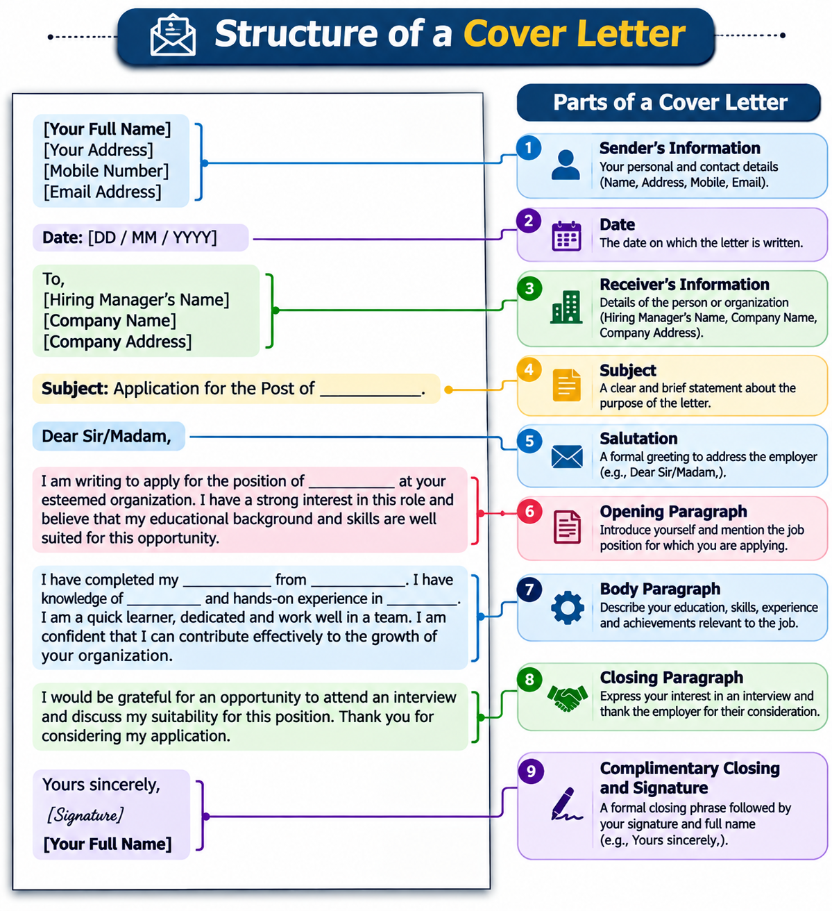

Soft skill top 30 PYQ
Q. What is Curriculum Vitae (CV)? Explain its meaning, overview and importance.
Curriculum Vitae (CV)
Curriculum Vitae (CV) is a Latin term which means
"Course of Life". It is a formal document that provides
detailed information about a person's educational
qualifications, skills, work experience, achievements
and personal details.
A CV is generally used when applying for a job,
internship, scholarship or academic position.
It helps employers understand the candidate's
qualifications and abilities.
A Curriculum Vitae gives a complete overview of
a person's academic and professional background.
It is an important document in the process of
job applications and career development.
A CV generally contains the following information:
- Personal Information
- Career Objective
- Educational Qualifications
- Technical and Professional Skills
- Work Experience
- Projects and Achievements
- Certifications and Training
- Languages Known
- References (if required)
Main Components of a CV
| Component |
Description |
| Personal Information |
Name, contact number, email address and location. |
| Career Objective |
A short statement about career goals. |
| Education |
Details of school, college, degree and qualifications. |
| Skills |
Technical, communication and other professional skills. |
| Experience |
Previous jobs, internships and professional experience. |
| Achievements |
Awards, certificates and important accomplishments. |
Importance of Curriculum Vitae
A CV plays an important role in professional life.
Its importance can be explained through the following points:
-
First Impression:
It creates the first impression of a candidate
before an employer.
-
Job Opportunities:
It helps candidates apply for different jobs
and professional opportunities.
-
Shows Qualifications:
It provides information about educational
qualifications and professional background.
-
Highlights Skills:
It helps employers understand the skills
and abilities of a candidate.
-
Saves Time:
It allows employers to quickly review
important candidate information.
-
Career Development:
It helps individuals present their achievements
and experience for future growth.
-
Professional Identity:
It represents a person's professional
identity in the job market.
Q. Explain the different types of CV. Which type highlights skills more effectively?
Curriculum Vitae (CV)
See question 9
Types of CV
1. Chronological CV
A chronological CV presents work experience
and educational qualifications in order of time.
Usually, the latest experience is mentioned first,
followed by older experiences.
Features:
- Shows work history in a time-based order.
- Highlights career growth and development.
- Easy for employers to understand.
- Suitable for people with continuous work experience.
Example:
Current Job → Previous Job → Earlier Job.
2. Functional CV
A functional CV mainly focuses on a person's
skills, abilities and achievements rather than
work history. It groups information according
to different skill areas.
Features:
- Gives more importance to skills and abilities.
- Highlights technical and professional knowledge.
- Useful for freshers and career changers.
- Reduces the focus on employment gaps.
Example:
Communication Skills → Computer Skills →
Leadership Skills → Technical Skills.
3. Combination or Hybrid CV
A combination CV includes both functional
and chronological formats. It highlights
important skills as well as work experience.
Features:
- Shows skills and work experience together.
- Provides a balanced professional profile.
- Highlights achievements and qualifications.
- Suitable for experienced professionals with strong skills.
Example:
Professional Skills → Work Experience →
Education → Achievements.
4. Targeted CV
A targeted CV is specially prepared for a
particular job or company. It includes only
those skills, qualifications and experiences
that are relevant to the job.
Features:
- Prepared according to a specific job role.
- Highlights relevant skills and qualifications.
- Matches the requirements of the employer.
- Can improve the chances of selection.
Example:
A candidate applying for a Web Developer job
highlights HTML, CSS, JavaScript and React skills.
Which Type of CV Highlights Skills More Effectively?
Answer: Functional CV
The Functional CV highlights skills more
effectively than other types of CV because
it gives priority to a person's abilities,
knowledge and achievements instead of
focusing mainly on employment history.
It is especially useful for fresh graduates,
students, job seekers with limited work
experience and people changing their careers.
For example:
- Technical Skills: HTML, CSS and JavaScript.
- Communication Skills: Speaking and writing.
- Computer Skills: MS Word and Excel.
- Problem-Solving Skills: Finding solutions to problems.
- Teamwork Skills: Working with other people.
Q.11 What is a Resume?and exaplain its type, essential parts and structure.
Resume
A Resume is a formal document that provides a brief summary of a person's educational qualifications, skills,
work experience, achievements and personal information.
It is mainly used when applying for a job or
internship. It helps employers understand the candidate's qualifications, abilities and suitability for a
particular job.
The word Resume comes from the French word Résumé, which means "Summary".
Types of Resume
There are mainly four types of resumes:
- Chronological Resume
A Chronological Resume presents the work experience and educational
qualifications in order of time. It usually starts with the most recent job or qualification and then
mentions older details.
Features:
- Shows work experience in time order.
- Highlights career growth and development.
- Easy for employers to understand.
- Suitable for candidates with continuous work experience.
Example: Current Job → Previous Job → Earlier Job.
- Functional Resume
A Functional Resume mainly focuses on the candidate's skills, abilities and
achievements instead of giving more importance to work history.
Features:
- Highlights skills and abilities.
- Gives less importance to employment history.
- Suitable for freshers and career changers.
- Focuses on technical and professional knowledge.
Example: Communication Skills, Computer Skills, Technical Skills and Leadership Skills.
- Combination Resume
A Combination Resume includes the features of both chronological and
functional resumes. It highlights skills as well as work experience.
Features:
- Shows both skills and work history.
- Provides a balanced professional profile.
- Highlights achievements and qualifications.
- Suitable for experienced and skilled candidates.
Example: Professional Skills → Work Experience → Education → Achievements.
- Targeted Resume
A Targeted Resume is specially prepared according to a particular job or
company. It includes only relevant skills, qualifications and experience required for that
position.
Features:
- Prepared for a specific job.
- Highlights job-related skills.
- Matches the requirements of the employer.
- Increases the chances of getting selected for an interview.
Example: A candidate applying for a Web Developer job highlights HTML, CSS, JavaScript and
React skills.
Essential Parts of a Resume
A good resume contains the following essential parts:
1. Personal Information
It includes the basic details of the candidate.
- Full Name
- Mobile Number
- Email Address
- City and Address
- LinkedIn Profile (if available)
2. Career Objective
A career objective is a short statement that describes the candidate's career goals and professional
interests.
Example: "To obtain a challenging position in a reputed organization where I can use my
skills and knowledge to contribute to the growth of the organization."
3. Educational Qualifications
It includes:
- School Name
- College Name
- Degree or Diploma
- Board or University
- Passing Year
- Percentage or CGPA
4. Skills
This section highlights the candidate's abilities and knowledge.
Examples
- Communication Skills
- Computer Skills
- Technical Skills
- Problem-solving Skills
- Teamwork
- Leadership Skills
5. Work Experience
This section describes the candidate's previous work experience.
It includes:
- Company Name
- Job Position
- Duratrion of Employement
- Role and Responsibilities
- Major Achievements
6. Achievements
This section includes important awards, certificates and accomplishments received by the candidate.
Examples
- Academic Awards
- Sports Achievements
- Competition Certificates
- Technical Achievements
7. Projects
This section provides details about projects completed by the candidate.
It includes:
- Projects Name
- Project Description
- Technologies Used
- Role and Responsibilities
8. Languages Known
This section mentions the languages that a candidate can speak, read or write.
Examples: Hindi and English
9. Hobbies and Interests
This section describes the candidate's personal interests and activities.
Examples:
- Reading Books
- Playing Sports
- Learning new Technology
- Travelling
10. Declaration
A declaration is a statement confirming that the information provided in the resume is true and correct to
the best of the candidate's knowledge.
Example: "I hereby declare that all the information
provided above is true and correct to the best of my knowledge and belief."
Structure of a Resume
A resume should be written in a proper sequence so that employers can easily understand the candidate's
information.

Q. Differentiate between CV and Resume.
A Curriculum Vitae (CV) and a Resume are both professional documents used for job applications. However, they
differ in their length, purpose, content, structure and level of detail.
Difference Between CV and Resume
| Curriculum Vitae (CV) |
Resume |
| A CV is a detailed document describing a person's complete academic and professional background.
|
A Resume is a short document presenting a person's relevant qualifications, skills and work
experience. |
| A CV is generally longer and may contain two or more pages depending on experience. |
A Resume is usually shorter and commonly contains one or two pages of information. |
| A CV is mainly used for academic, research, educational and certain professional applications.
|
A Resume is mainly used when applying for jobs in companies and private organizations. |
| A CV includes detailed information about education, research, publications, skills and
professional achievements. |
A Resume includes only relevant education, skills, work experience and achievements required for
a particular job. |
| A CV focuses on complete academic qualifications, professional history and long-term career
development. |
A Resume focuses on relevant skills, experience and abilities suitable for a specific job
position. |
| A CV generally remains detailed and is updated whenever new qualifications or achievements are
added. |
A Resume is usually customized according to the requirements of each job application. |
| A CV provides detailed information about the candidate's complete professional and academic
experience. |
A Resume highlights only those work experiences that are relevant to the applied job. |
| A CV provides complete educational details, including degrees, research work, certifications and
academic achievements. |
A Resume provides brief educational details that are relevant to the particular employment
opportunity. |
| A CV generally follows a detailed structure containing several academic and professional
sections. |
A Resume follows a concise and flexible structure containing selected professional information.
|
| A CV is commonly preferred for academic positions, research opportunities and higher education
applications. |
A Resume is commonly preferred for corporate jobs, private companies and industry-related
employment opportunities. |
| A CV may include academic or professional references when required by the institution or
employer. |
A Resume generally does not include references unless specifically requested by the employer.
|
| A CV presents a detailed record of academic achievements and professional activities throughout
a person's career. |
A Resume presents selected career information to demonstrate suitability for a particular job
opportunity. |
Q. What is a Cover Letter? Explain its Importance and Format.
Cover Letter
A Cover Letter is a formal document sent along with a Resume or Curriculum Vitae (CV) when applying for a
job. It introduces the candidate to the employer and explains why the candidate is suitable for a particular
job position.
It provides information about the candidate's qualifications, skills, experience and
interest in the organization.
Importance of Cover Letter
A Cover Letter plays an important role in the job application process. Its importance is explained below:
-
Personal Introduction
A Cover Letter introduces the candidate to the employer and provides basic information about
their professional background.
-
Creates First Impression
It creates a positive first impression and helps the employer understand the candidate's
personality and communication skills.
-
Explains Job Interest
It explains why the candidate is interested in a particular job position and wants to work in
that organization.
-
Highlights Skills
It highlights important skills, qualifications and abilities that make the candidate suitable
for the job.
-
Explains Resume Details
It provides additional information about important achievements and experiences mentioned in the
Resume.
-
Shows Communication Skills
A well-written Cover Letter demonstrates the candidate's writing ability, professional
communication and presentation skills.
-
Increases Job Opportunities
It can improve the chances of getting selected for an interview by showing the employer the
candidate's interest and suitability.
-
Shows Professionalism
It reflects the candidate's seriousness, confidence and professional attitude towards the job
application.
-
Explains Career Gaps
It provides an opportunity to explain career gaps, career changes or limited work experience in
a positive manner.
-
Connects Candidate with Employer
It creates a direct connection between the applicant and the organization by explaining how the
candidate can contribute to its growth.
Format of a Cover Letter
-
Sender's Information
It includes the applicant's personal and contact details.
- Full Name
- Address
- Mobile Number
- Email Address
-
Date
The date on which the Cover Letter is written should be mentioned below the sender's
information.
-
Receiver's Information
It includes the details of the person or organization receiving the letter.
- Hiring Manager's Name
- Company Name
- Company Address
-
Subject
The subject clearly explains the purpose of writing the letter.
- Example: Application for the Post of Computer Operator.
-
Salutation
It is a formal greeting used to address the employer.
Examples:
- Dear Sir/Madam,
- Dear Hiring Manager,
-
Opening Paragraph
The first paragraph introduces the candidate and mentions the job position for which they are
applying.
-
Body Paragraph
The main paragraph explains the candidate's educational qualifications, skills, work experience
and achievements relevant to the job.
-
Closing Paragraph
The final paragraph expresses interest in attending an interview and thanks the employer for
considering the application.
-
Complimentary Closing
A formal closing phrase is used before the candidate's name.
Examples:
- Yours sincerely,
- Yours faithfully,
- Best regards,
-
Signature and Name
At the end, the candidate writes their full name and signature.
Structure of Cover Letter

Sample of cover letter

Q. Write a job application along with a professional CV/Resume for a suitable job.
Job Application Letter
Rohit Kumar
Civil Lines, Kanpur, Uttar Pradesh
Mobile: +91 9876******
Email: name@email.com
Date: 23 November 2026
To,
The Hiring Manager,
TechnoSoft Solutions Pvt. Ltd.,
Sector-62, Noida, Uttar Pradesh.
Subject: Application for the Post of Computer Operator
Dear Sir/Madam,
I am writing to apply for the post of Computer Operator
in your organization. I came to know about this vacancy
through your company's job advertisement.
I have completed my PGDCA course and have good knowledge
of computer applications, MS Office, Internet and basic
programming. I also have good typing skills,
communication skills and the ability to work efficiently.
I am hardworking, punctual and eager to learn new
technologies. I assure you that I will perform my duties
with honesty and dedication if given an opportunity
to work in your organization.
I have attached my Resume for your kind consideration.
I would be grateful if you could give me an opportunity
to attend an interview.
Thank you for your time and consideration.
Yours faithfully,
Rohit Kumar
Resume
RESUME
Rohit Kumar
Civil Lines, Kanpur, Uttar Pradesh
Mobile: +91 97686*****
Email: name@email.com
Career Objective
To obtain a position as a Computer Operator in a reputed
organization where I can use my computer knowledge,
technical skills and abilities to contribute to the
growth of the organization.
Educational Qualification
| Qualification |
Board / University |
Year |
Percentage |
| PGDCA |
Government Polytechnic |
2026 |
Appearing |
| 12th |
UP Board |
2020 |
85% |
| 10th |
UP Board |
2018 |
58% |
Technical Skills
- MS Word, MS Excel and MS PowerPoint
- Internet and Email Handling
- Basic Computer Knowledge
- HTML, CSS and Basic Programming
- Typing and Data Entry
Personal Skills
- Good Communication Skills
- Time Management
- Hardworking and Punctual
- Quick Learning Ability
Work Experience
Fresher
Personal Details
- Father's Name: Rajesh Kumar
- Date of Birth: 15 March 2003
- Gender: Male
- Nationality: Indian
- Languages Known: Hindi and English
- Marital Status: Unmarried
Declaration
I hereby declare that all the information provided above
is true and correct to the best of my knowledge and belief.
Place: Kanpur
Date: 23 November 2026
Signature:
Rohit Kumar